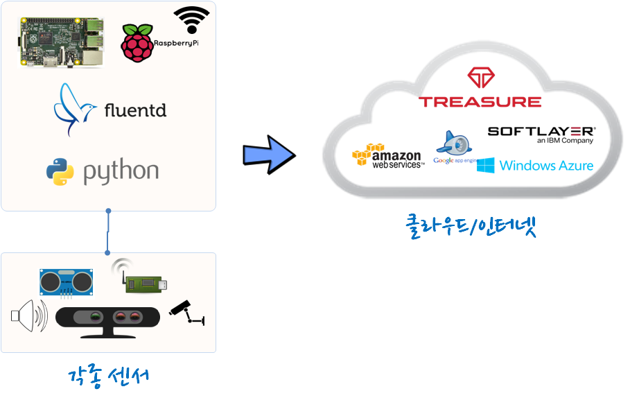

xwMOOC 컴퓨터
데이터 수집기와 로거(logger), Fluentd
학습 목표
- 데이터 수집기와 로거(logger), Fluentd를 알아본다.
1. IoT 데이터 수집 아키텍처
IoT의 출발점은 아날로그 정보를 디지털 정보로 변환하는데 있다. 이를 위해 각종 센서가 동원된다. 온도정보처리를 위해서 온도센서, 습도정보처리를 위해서 습도센서 등 다양한 물리적 공간을 측정하고 디지털로 변환하여 중간 수집기(게이트웨이)로 보낸다.
게이트웨이 역할을 하는 라즈베리 파이는 일단 GPIO를 통해 다양한 센서 정보를 받아 들일 수 있고, 또한 인터넷에 연결되는 HTTP 프로토콜을 내장하고 있어 바로 클라우드로 송신이 가능하다.

IoT 데이터 수집 자재명세서(BOM)
라즈베리 파이 게이트웨어에 연결된 각종 센서에서 수집된 정보를 파이썬으로 프로그래밍하고 이를 Fluentd 수집기를 통해 클라우드로 쏜다.
라즈베리 파이(Raspberry Pi): 센서 게이트웨이
Fluentd: 로그 수집 통합 소프트웨어
파이썬(Python): 파이썬 프로그래밍 언어
TreasureData: 클라우드 IoT 센서 데이터 저장소 각종 센서(Sensor): 초음파센서, 적외선센서, 온도센서, 습도센서 등
2. IoT 데이터 수집 절차
- 물리세계: 빛, 온도, 센서, 소리 등
- 물리 세계에서 나온 아날로그 정보를 각종센서를 통해 수집하여 디지털 정보로 변환
- 게이트웨이: 센서정보를 클라우드로 전송하는 임시 저장소 및 처리기
- 라즈베리 파이 GPIO를 통해 센서 정보를 수집
- 파이썬 프로그래밍 언어를 통해 센서 정보 수집, 처리, 저장 및 클라우드 전송
- Fluentd는 클라우드와 게이트웨이(라즈베리 파이)를 연결하여 센서 데이터를 전송
- 클라우드: IoT 센서정보가 게이트웨어를 거쳐 넘어온 데이터를 클라우드 저장소에 저장
- JSON 형식 데이터를 클라우드 저장소 및 테이블에 시계열 정보를 삽입저장함
라즈베리 파이에 기본적으로 파이썬이 설치되어 있어 Fluentd만 추가로 설치한다.1
$ sudo aptitude install ruby-dev
$ sudo gem install fluentd
$ sudo fluent-gem install fluent-plugin-tdfluent.conf 환경설정 파일에 클라우드 서비스 API키와 관련된 설정을 한다.
<match td.*.*>
@type tdlog
apikey YOUR_API_KEY_HERE
auto_create_table
buffer_type file
buffer_path /home/pi/fluentd/td
</match>
<source>
@type http
port 8888
</source>
<source>
@type forward
</source>fluentd -c fluent.conf 명령어를 실행한다.
$ fluentd -c fluent.conf$ curl -X POST -d 'json={"sensor1":3123.13,"sensor2":321.3}' http://localhost:8888/td.testdb.raspberrypi2.1. 물리세계 정보를 센서 통해 게이트웨이에 저장
2.2. 센서 정보를 Fluentd에 전송
2.3. Fluentd 정보를 클라우드에 전송
2.4. 파이썬 설치
$ sudo pip install fluent-logger# test.py
from fluent import sender
from fluent import event
sender.setup('fluentd.test', host='localhost', port=24224)
event.Event('follow', {
'from': 'userA',
'to': 'userB'
})$ python test.py2.5. td-agent 라즈베리 파이 설치
ulimit -n 명령어를 통해서 1024가 나오면 NTP 설정을 참조해서 변경한다. 하지만, curl -L https://toolbelt.treasuredata.com/sh/install-debian-jessie-td-agent2.sh | sh ARM 아키텍처는 설치할 수 없는 것으로 보여서
pi@raspberrypi:~ $ ulimit -n
65536
pi@raspberrypi:~ $ curl -L https://toolbelt.treasuredata.com/sh/install-debian-jessie-td-agent2.sh | shhttp://docs.fluentd.org/articles/raspberrypi-cloud-data-logger↩